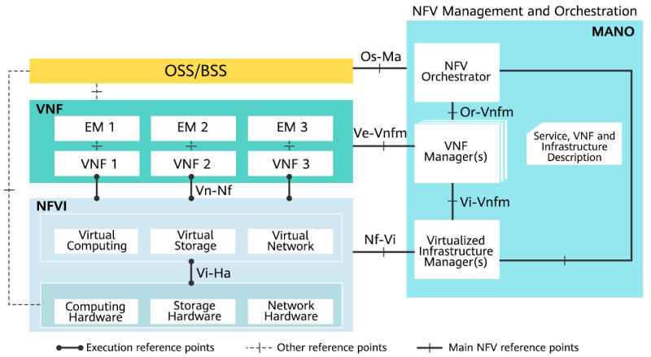
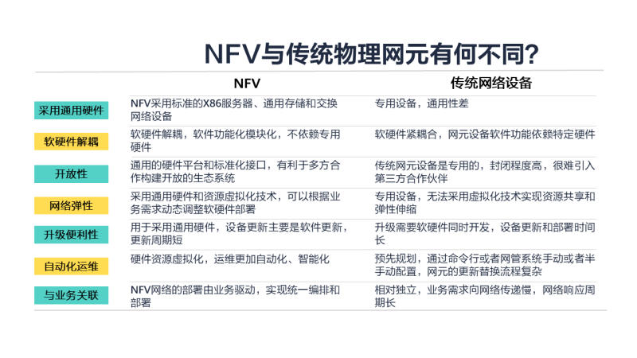
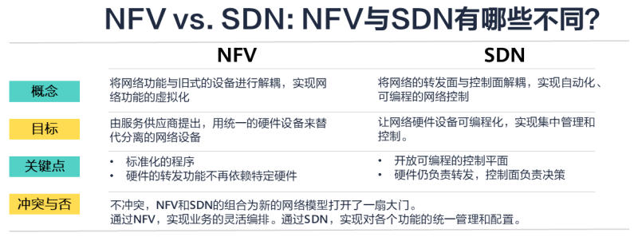
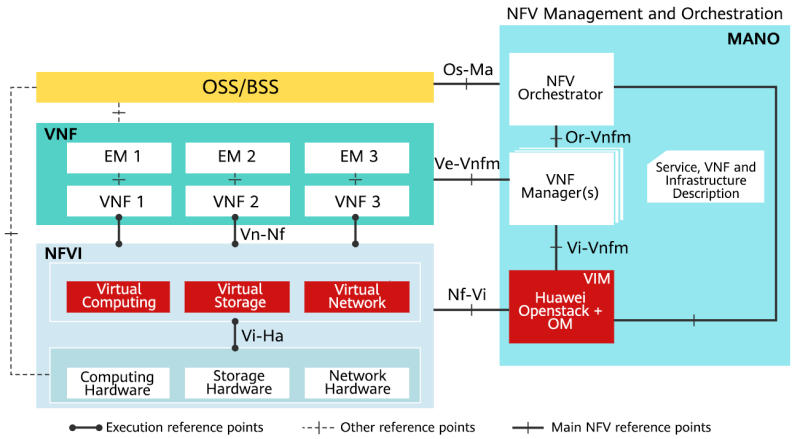

什么是NFV？
网络功能虚拟化（Network Functions Virtualization，NFV）是一种关于网络架构的概念。我们平时使用的x86服务器由硬件厂商生产，在安装了不同的操作系统以及软件后实现了各种各样的功能。而传统的网络设备并没有采用这种模式，路由器、交换机、防火墙、负载均衡等设备均有自己独立的硬件和软件系统。NFV借鉴了x86服务器的架构，它将路由器、交换机、防火墙、负载均衡这些不同的网络功能封装成独立的模块化软件，通过在硬件设备上运行不同的模块化软件，在单一硬件设备上实现多样化的网络功能。
目录
NFV架构
NFV架构是欧洲电信标准协会（ETSI）提出的用于定义NFV实施标准的一种标准架构。NFV的理念是将标准化的网络功能应用于统一制式的硬件上。不同于传统物理设备中软件与硬件强绑定的关系，在NFV架构中，实现各种网络功能的标准化软件必须能够应用在同一台硬件设备上。这就要求NFV需要有一个统一的标准。NFV架构由基础网络功能虚拟化架构、虚拟网络功能功能、管理自动化及网络编排三个部分组成：
- 基础网络虚拟化架构（Network Functions Virtualization Infrastructure, NFVI）
NFVI就好比各手机厂商推出的手机系统，它给硬件设备赋予基本的组件，支持网络应用所需要的软件或者容器管理平台。
- 虚拟网络功能（Virtual Network Functions, VNF）
VNF是实现网络功能（转发服务、IP配置等）的软件应用，就好比手机上的APP。在NFV架构中，各种VNF在NFVI的基础上实现。由于NFVI是标准化的架构，使得不同的VNF获得了通用性，不再依赖于原来的黑盒设备。
- 管理自动化及网络编排（Management and orchestration, MANO）
MANO是用于管理各VNF以及NFVI的统一框架，方便运维人员进行业务编排与设备管理。
 _NFV标准架构_OSS/BSS
服务提供商的管理功能，不属于NFV框架内的功能组件，但MANO和网元需要提供对OSS/BSS 的接口支持。
VNF
Virtual Network Functions，指虚拟机及部署在虚拟机上的业务网元、网络功能软件等。
NFVI
NFV Infrastructure，NFV基础设施，包括所需的硬件及软件。为VNF提供运行环境。
- Hardware：硬件层，包括提供计算、网络、存储资源能力的硬件设备。
- Virtualization Layer：虚拟化层，主要完成对硬件资源的抽象，形成虚拟资源，如虚拟计算资源、虚拟存储资源、虚拟网络资源。NFV标准架构定义的主要功能模块。
MANO
Management and Orchestration，NFV的管理和编排。包括VIM，VNFM及NFVO，提供对VNF和NFVI资源的统一管理和编排功能。
- VIM：Virtualized Infrastructure Managers, NFVI管理模块，主要功能包括：资源的发现、虚拟资源的管理分配、故障处理等。
- VNFM：VNF Managers ，VNF管理模块，主要对VNF的生命周期（实例化、配置、关闭等）进行控制。
- NFVO：NFV Orchestrator，实现对整个NFV基础架构、软件资源、网络服务的编排和管理。
相比传统的物理网络设备，NFV有哪些好处呢？
为了更好的理解NFV的特点，可以将NFV和传统的网络设备进行比较，具体见下图：
 _NFV和传统物理网络设备有什么不同_NFV的优势
NFV适用于各种网络解决方案，目前使用较多的包括SD-WAN、 网络切片、移动边缘计算等。由于NFV将软件功能与硬件设备进行了解耦，随着标准化架构的完善，NFV带来了诸多优势：
- 灵活的业务（ Flexible services ）
在服务器上运行不同的VNF，当网络需求变更时，根据需求变更和移动VNF即可，加快了网络功能交付和应用的速度。在测试新的网络功能时，无需建立专门的实验环境，只需请求新的虚拟机来处理该请求，当服务停用时释放该虚拟机即可，为网络功能测试提供了更便捷的方法。
- 更低的成本（Less Spending）
使用NFV后，网络通信实体将变为虚拟化的网络功能，这使得单一硬件服务器上可以同时运行多种网络功能，从而减少了物理设备的数量，实现了资源整合，降低了物理空间、功耗等带来的成本。但由于从传统设备切换为NFV在初期的投入较大，短期内的投资回报比并不比传统的物理网元具有足够的优势。
- 更高的资源利用率（Greater Resource Efficiency）
当网络需求发生变化时，无需更换硬件设备，避免了复杂的物理变更，通过软件重组快速更新基础网络架构，避免由业务变更带来的设备冗余和搬迁需求。
- 避免供应商锁定（Avoid Vendor Lock-in）
在统一制式的硬件上部署不同的网络功能，避免了某种功能被特定的供应商锁定，降低了网络设备维护带来的服务费用。
NFV vs. SDN
什么是SDN
随着大数据在公众业务流量中的使用增加，IT逐渐成为人们日常生活中的消费品，网络的灵活性与安全性变得格外重要。传统网络中，管理员通过命令行配置网络设备。这种方式效率低，无法满足快速演进的资源、服务和应用需求。
软件定义网络（ Software-defined Networking，SDN）技术是一种网络管理方法。SDN建立在将网络基础设施的控制面与转发面分离的基础上，将自动化和编程应用于控制面，使管理员具有动态调整全网流量的能力。通过将网络控制集中到SDN控制器上，使整个网络在逻辑上体现为单一的网络设备，通过可编程配置实现自动化配置、控制、保护和资源调整。
NFV和SDN有什么不同
NFV也是一种网络架构，它将传统物理设备的网络功能封装成独立的模块化软件，通过在硬件设备上运行不同的模块化软件，在单一硬件设备上实现多样化的网络功能。
SDN和NFV的相似之处主要体现在如下方面：
- 都以实现网络虚拟化为目标，实现物理设备的资源池化。
- 都提升了网络管理和业务编排效率。
- 都希望通过界面操作或者编程语言来进行网络编排。
SDN和NFV的不同之处参见下图。
 _NFV与SDN有什么不同_SDN抽象物理网络资源（交换机、路由器等），并将决策转移到虚拟网络控制平面。控制平面决定将流量发送到哪里，而硬件继续引导和处理流量，无需依赖标准的硬件设备。NFV的目标是将所有物理网络资源进行虚拟化，允许网络在不添加更多设备的情况下增长，这依赖于标准的硬件设备。
其实经典SDN架构也将硬件与软件解耦作为目标，但在实现过程中由于软件研发成本、设备替换等原因的影响，现行的SDN方案弱化了控制面的分离，仅以网络可编程和自动化运维为目标。
华为NFV架构中，虚拟化层及VIM的功能由FusionSphere云操作系统实现，即华为FusionSphere可以实现计算资源、存储资源和网络资源的全面虚拟化，并能够对物理硬件虚拟化资源进行统一的管理、监控、优化。
 _华为NFV架构_Virtualization Layer
- KVM：用于完成硬件资源的虚拟化。华为FusionSphere使用经过华为增强的KVM，着重改进了KVM的性能及可靠性。
- FusionStorage：FusionStorage是一种存储与计算高度融合的分布式存储软件，在通用X86服务器上部署该软件后，可以把所有服务器的本地硬盘组织成一个虚拟存储资源池，提供块存储功能。
- FusionNetwork：FusionNetwork提供传统虚拟交换向未来的软件定义网络演进方案，通过VxLAN的二层隧道封装协议的支持，配合由华为SDN Controller完成SDN网络的自动化配置部署，SLA服务质量控制，多租户隔离和分层。
VIM
- FusionSphere OpenStack：FusionSphere OpenStack是华为基于OpenStack进行增强、加固后的企业版本。对外展现统一接口，对计算、存储、网络虚拟资源进行集中调度和管理，降低业务的运行成本，保证系统的安全性和可靠性。
- FusionSphere OpenStack OM：FusionSphere OpenStack的操作管理界面，主要对FusionSphere的软件和使用的硬件进行全面的监控和管理，实现自动化资源发放和自动化基础设施运维管理，并向内部运维管理人员提供管理界面。